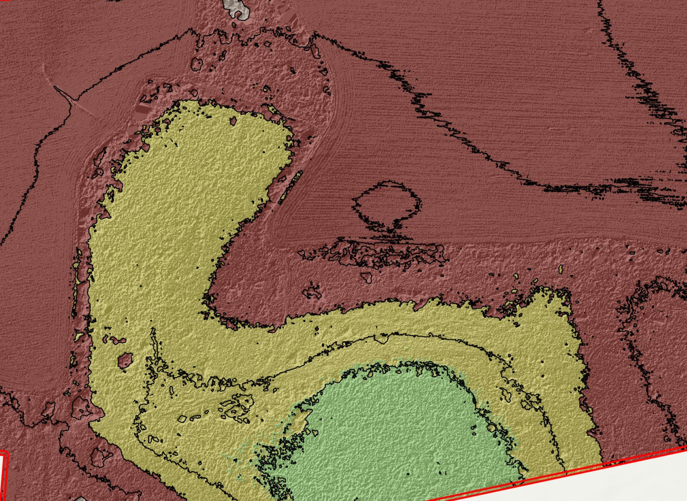

953 Calvary Church Road Aerial Mapping

Overview
End-to-end UAS photogrammetry mission over two parcels totaling 67.26 county-record acres. The Matrice 4E flew 270 images at 390 ft AGL with 80/70% forward/side overlap under diffuse overcast conditions using Point One Navigation network RTK Fixed, with no GCPs deployed. PIX4Dmatic v2.5.1 returned 100% camera calibration, 1.77M automatic tie points, and 33.9M dense points at 0.111 ft/px GSD. ArcGIS Pro post-processing produced a 0.5 ft/px DTM, 5-ft contours clipped to the parcel boundary, and parcel-aligned zonal statistics. This project serves as the baseline template for the Liquid Sun Creative 26-page Delivery Report format.
Flight
Processing
Coordinate Reference Systems
- Horizontal
- NAD83(2011) / South Carolina (EPSG:6570)
- Vertical
- NAVD88 height in US Survey Feet GEOID18
- Image
- WGS84 + EGM96
Parcel Statistics
Methods
- 390 ft AGL nadir grid at 80% forward / 70% side overlap
- RTK Fixed via Point One Navigation network RTK; no GCPs deployed
- PIX4Dmatic: calibration to dense cloud to iterative ground classification to DSM to orthomosaic
- ArcGIS Pro: DTM interpolation at 0.5 ft/px, 5-ft contour generation, parcel-clipped contours, zonal statistics
- Cartographic map exports: OrthoContour / DSM hillshade / DTM hillshade (3 PDF layouts)
Deliverables
- Orthomosaic (0.111 ft/px GeoTIFF (LZW))
- DSM (0.111 ft/px GeoTIFF (LZW))
- DTM (0.5 ft/px GeoTIFF)
- Classified Point Cloud (LAZ)
- 5ft Contour Lines (ESRI Shapefile)
- PIX4Dmatic Quality + Custom Reports (PDF)
Key Technical Challenge
Ground classification under dense canopy required iterative refinement from 5 ft to 1 ft DEM resolution.
Lessons Learned
Photogrammetry has real line-of-sight limits under canopy. Iterative classification at progressively finer DEM resolution significantly improves ground/canopy separation. RTK Fixed without GCPs is reliable for property-scale mapping but precludes ASPRS class assignment.